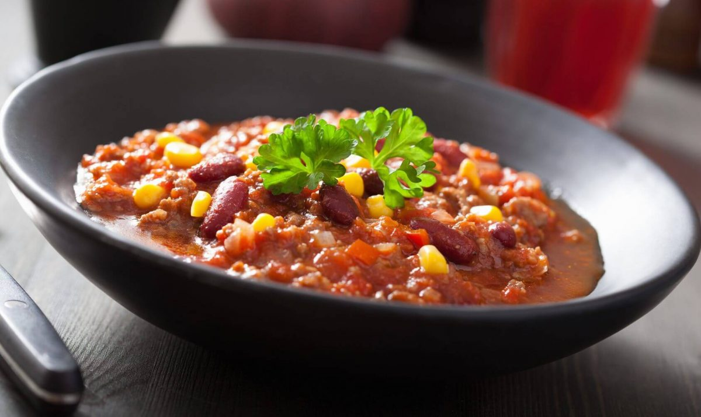

Le chili con carne (chili à la viande) est une sorte de ragoût de viande(s) épicé originaire du sud des États-Unis dont les ingrédients essentiels de la variante la plus connue sont la viande de bœuf et le chili. Il en existe de nombreuses variantes dans lesquelles entrent diverses viandes, divers légumes comme les haricots, rouges ou noirs, le maïs, les poivrons, rouges ou verts, les tomates, et divers aromates comme les oignons, l'ail, le cumin, la coriandre, etc.. C’est parti pour la recette! Source
Pour 4 personnes :
- 1 grande boite d’haricots rouges
- 5 tomates
- 500g de viande hachée
- 1 C. à café de sel
- 1 C. à café de cumin
- 1 C. à café d’épices à chili
- 1 C. à café de paprika doux
- 1 C. à café de pimens d’espelette
- 2 gousses d’ail
- 2 Oignons
Instructions
- Faire revenir l’ail et les oignons dans un fond l’huile d’olive.
- Ajouter la viande puis remuer jsuqu’à coloration.
- Ajouter les tomates.
- Ajouter les épices, remuer, et laisser mijoter à couvert 45 minutes
- Verser les haricots rouges et laisser mijoter à couvert 10 minutes.
- Enlever le couvercle baisser le feu, mélanger.